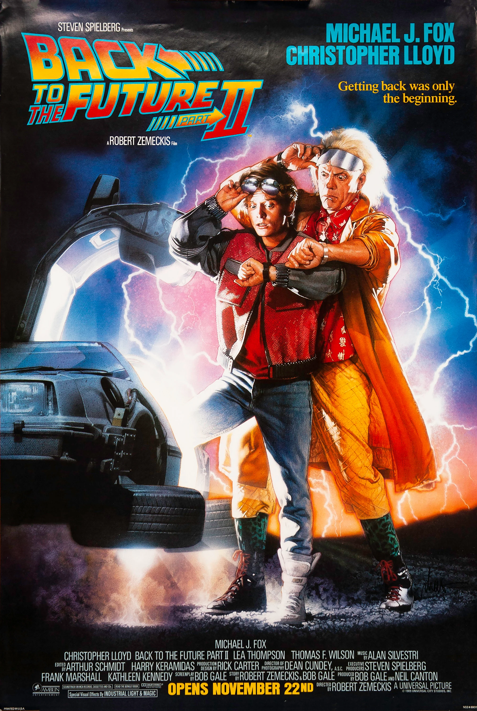

Back to the Future Trilogy
Overview:
1. Back to the Future (1985)

In the first installment, teenager Marty McFly (Michael J. Fox) accidentally travels back to 1955 in a DeLorean time machine invented by the eccentric Dr. Emmett Brown (Christopher Lloyd). Marty must ensure his teenage parents, George and Lorraine McFly, fall in love or risk altering his own existence. With the help of Dr. Brown, Marty navigates the complexities of the past to return to his own time.
2. Back to the Future Part II (1989)
The sequel picks up immediately after the first film. Marty and Doc Brown travel to 2015 to prevent Marty’s future children from becoming entangled in criminal activities. However, a series of missteps lead them to an alternate 1985 where a tyrannical Biff Tannen (Thomas F. Wilson) has taken control. Marty and Doc must correct the timeline and restore their original future.
3. Back to the Future Part III (1990)

In the trilogy's conclusion, Marty travels back to 1885 to rescue Doc Brown, who is trapped in the Wild West. Marty faces challenges in a time far removed from his own, including confrontations with outlaws and adapting to the historical period. Together, Marty and Doc must find a way to return to 1985 before time runs out.